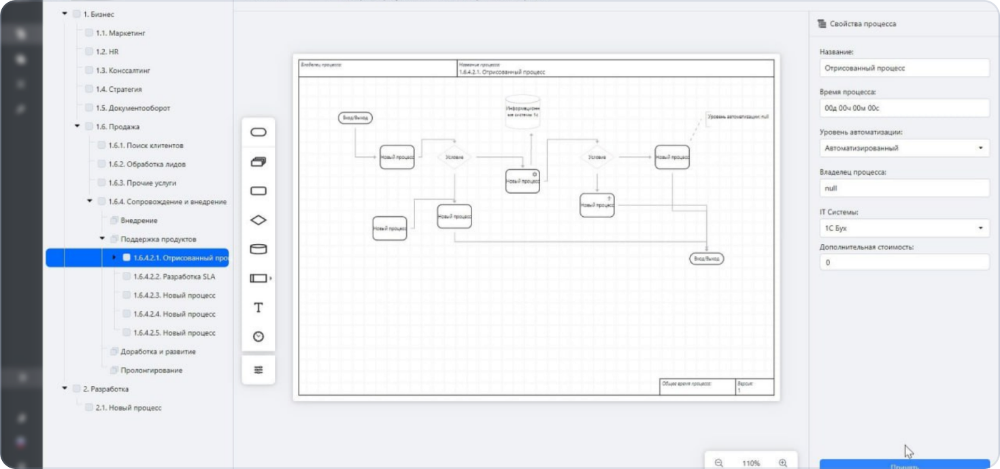
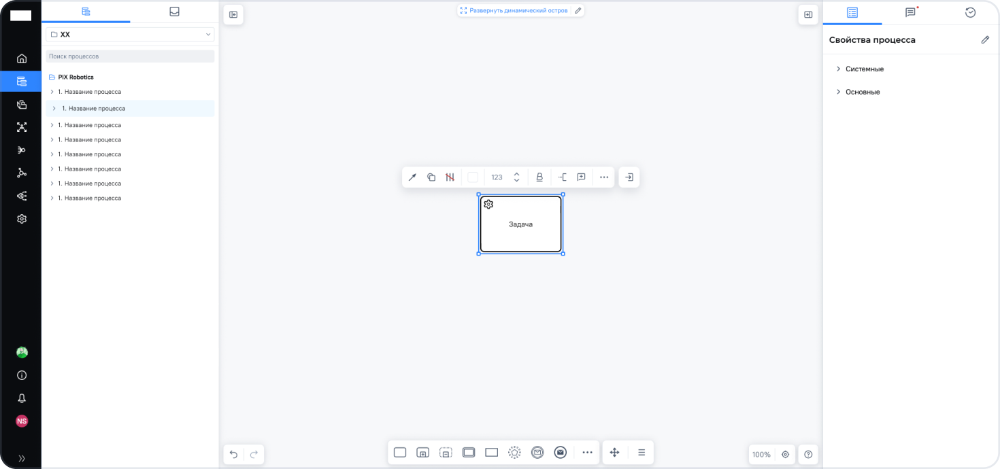
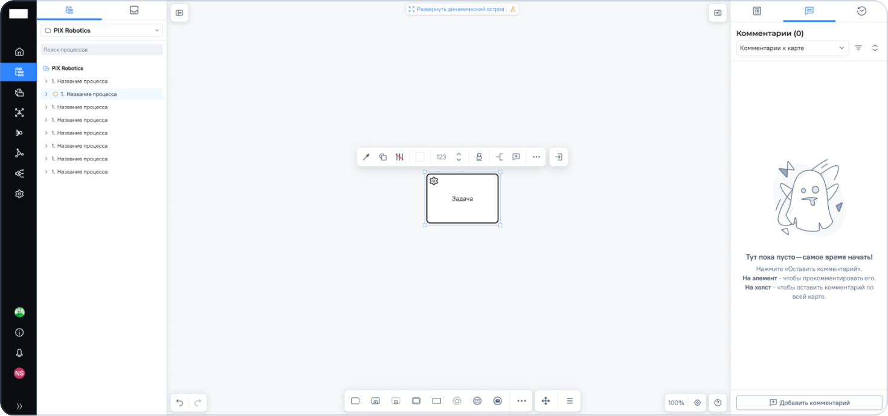
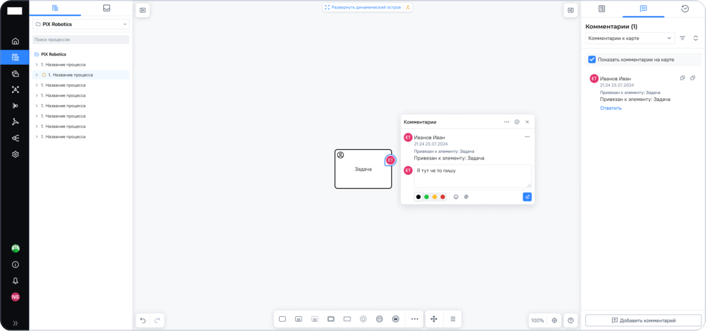
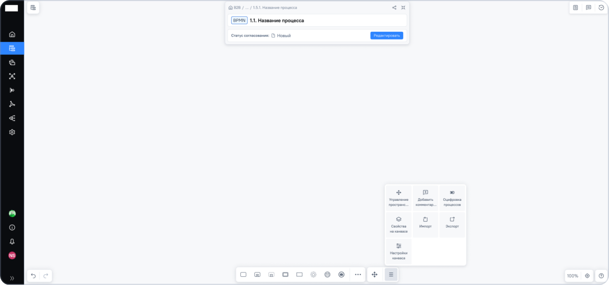

Раздел «Карта процессов»
Кратко
Редизайн редактора бизнес-процессов в B2B-платформе PIX Процессы.
Роль: продуктовый дизайнер, от исследования до передачи в разработку.
Разгрузил рабочую область и ускорил редактирование схем. По запросу пользователей добавил комментарии и историю изменений.
Контекст
Основное рабочее пространство платформы: здесь аналитики создают, связывают и редактируют схемы бизнес-процессов. От удобства раздела зависит скорость их работы и качество описанных процессов.
Моя роль
Вёл раздел целиком: аудит старого интерфейса, интервью и проверка гипотез, архитектура рабочей области, паттерн «панель элементов», приведение к дизайн-системе, работа с разработкой на всех этапах.
Цель
Разгрузить рабочую область, ускорить ключевые сценарии и подготовить интерфейс к росту функциональности.
Проблемы пользователей
Холст ограничен рамкой листа, и сложные схемы в него не помещаются. Панели и служебная разметка отвлекают от схемы, а частые действия разбросаны по интерфейсу. Отмены действий нет, поэтому пользователи работают осторожно и медленно.
Аудит системы
Аудит подтвердил эти проблемы и показал высокий порог входа: навигация сложная, поиска по дереву процессов нет.
Проверка гипотез
Подтвердились все шесть: бесконечный холст, панель элементов внизу, отмена и повтор действий, контекстная панель над фигурой, свойства в аккордеонах и поиск по процессам.
Главное открытие дали интервью: пользователям не хватало комментариев на схеме и истории изменений. Обсуждения и версии уходили в переписки, созвоны и отдельные файлы.
Интерфейс до

Интерфейс после




Результат
- Бесконечный холст вмещает схемы любой сложности.
- Рабочая область разгружена: служебная разметка убрана, инструменты перенесены вниз.
- Частые действия собраны в «панели элементов» у выбранной фигуры.
- Отмена и повтор действий снимают страх ошибки.
- Свойства свёрнуты по группам, появился поиск по процессам.
- Комментарии на схеме и история изменений закрыли прямой запрос пользователей.
- Интерфейс приведён к единой дизайн-системе.
- «Панель элементов» появилась в продукте раньше аналогичных решений на рынке.
Главный вывод
Аудит показывает, где интерфейс неудобен. Разговор с пользователем показывает, чего в нём вообще нет: комментарии и история изменений всплыли только на интервью.
Другие кейсы